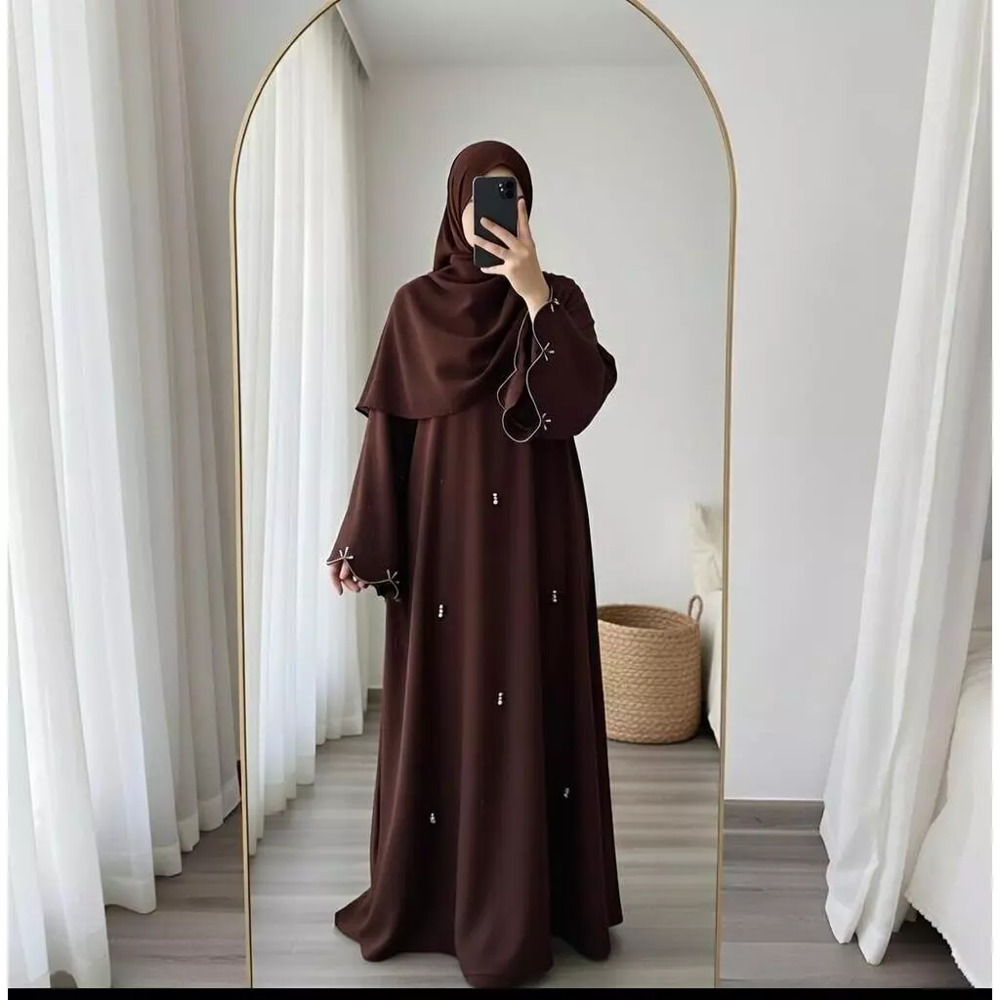

Foto produk yang cantik memang menarik, tetapi cara memilih bahan gamis sebaiknya dimulai dari kebutuhan pemakaian. Gamis untuk kuliah dari pagi hingga sore mungkin membutuhkan karakter bahan yang berbeda dari gamis untuk acara malam. Sebelum membeli, periksa informasi produk dan tanyakan detail yang belum tersedia.
1. Sesuaikan bahan dengan aktivitas
Untuk aktivitas sehari-hari, pertimbangkan bahan yang terasa nyaman ketika bergerak dan duduk lama. Untuk acara formal, kamu mungkin memilih kain dengan jatuh yang lebih rapi. Jangan hanya mengandalkan nama bahan—konstruksi kain, ketebalan, dan campurannya juga memengaruhi hasil akhir.
2. Perhatikan sirkulasi udara dan cuaca
Di cuaca tropis, kain yang terasa ringan dan tidak terlalu panas dapat membantu kenyamanan. Namun, “ringan” tidak selalu berarti cocok untuk semua orang atau semua situasi. Cari keterangan komposisi kain dan, bila tersedia, ulasan pembeli tentang pemakaian nyata.
3. Cek ketebalan dan tingkat menerawang
Periksa foto produk di pencahayaan yang cukup dan baca deskripsi mengenai lapisan atau furing. Jika informasi belum jelas, tanyakan kepada penjual apakah gamis memerlukan inner tambahan. Jangan menganggap warna gelap otomatis tidak menerawang.
4. Baca petunjuk perawatan
Periksa apakah produk perlu dicuci dengan tangan, menggunakan deterjen lembut, atau dijauhkan dari panas tinggi. Jika kamu memiliki jadwal padat, bahan yang mudah dirawat bisa lebih praktis. Selalu ikuti label perawatan pada produk yang benar-benar kamu beli.
5. Pahami ukuran, bukan hanya label S–XL
Ukuran bisa berbeda antarbrand. Cocokkan lingkar dada, panjang baju, panjang lengan, dan detail lain pada size chart. Untuk gamis loose, periksa juga lebar bagian bawah dan ukuran bahu agar tetap nyaman berjalan dan duduk.
6. Periksa warna dan foto produk
Warna pada layar dapat berbeda dari warna asli karena pencahayaan dan pengaturan layar. Gunakan foto dari beberapa sudut bila tersedia, lalu tanyakan apakah ada foto produk di cahaya natural. Pilih warna yang mudah dipadukan dengan hijab dan alas kaki yang sudah kamu miliki.
7. Hitung biaya pemakaian, bukan harga saja
Pertimbangkan seberapa sering gamis akan dipakai, kebutuhan perawatan, dan apakah bisa digunakan di beberapa kesempatan. Satu busana yang sering dipakai dan mudah dipadukan dapat terasa lebih bermanfaat daripada membeli hanya karena sedang viral.
Checklist sebelum checkout
- Komposisi atau deskripsi bahan sudah dibaca.
- Ukuran tubuh sudah dibandingkan dengan size chart.
- Panjang dan tingkat ketebalan sesuai kebutuhan.
- Petunjuk perawatan tersedia atau sudah ditanyakan.
- Kebijakan pengiriman dan penukaran sudah dipahami.
Tren modest fashion belakangan menekankan busana yang praktis untuk beragam aktivitas. Untuk keputusan yang tepat, utamakan informasi produk yang jelas dan kebutuhan pribadi—bukan sekadar mengikuti tren.